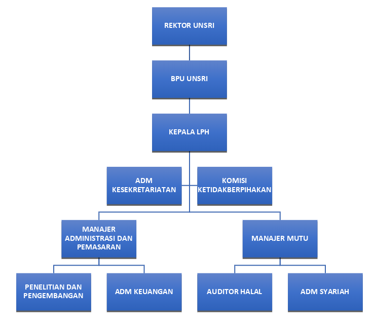

Profil Lembaga
Sejarah & Komitmen
LPH Universitas Sriwijaya berkomitmen menyediakan layanan pemeriksaan halal yang profesional, independen, objektif, dan berintegritas tinggi.
Integritas Syariat
Penjaminan kehalalan produk yang objektif, independen, dan patuh syariat.
Ketelitian Ilmiah
Pengujian residu dan parameter kimia akurat bekerja sama dengan LKAIP UNSRI.
Tim Profesional
Didukung oleh tim auditor halal yang tersertifikasi secara nasional.
Surat Keputusan Rektor Universitas Sriwijaya
Struktur & Alur Pertanggungjawaban
Tata kelola hierarkis yang terstruktur menjamin akuntabilitas serta transparansi operasional pemeriksaan halal.
-
1
Rektor Universitas Sriwijaya
Pimpinan tertinggi universitas yang mengesahkan landasan hukum pendirian serta menerima pertanggungjawaban dari Badan Pengelola Usaha.
-
2
Badan Pengelola Usaha (BPU) Universitas Sriwijaya
Unit pengelola yang mengawasi aspek bisnis dan operasional LPH, serta melaporkan kinerja berkala secara langsung kepada Rektor Universitas Sriwijaya.
-
3
Kepala LPH Universitas Sriwijaya
Penanggung jawab operasional harian seluruh aktivitas pemeriksaan halal yang melapor dan bertanggung jawab kepada Badan Pengelola Usaha (BPU) Universitas Sriwijaya.
-
4
Manajer Mutu & Manajer Administrasi dan Pemasaran
Pimpinan divisi fungsional yang memastikan standar mutu pengujian terjaga serta tertib administrasi, melaporkan seluruh kegiatannya langsung kepada Kepala LPH.

Tim Auditor Halal
Akademisi profesional dengan latar belakang keilmuan yang kuat serta telah tersertifikasi oleh otoritas halal nasional.

Dr. Zainal Fanani, S.Si., M.Si.
Auditor Halal LPH UNSRI
Prof. Hermansyah, S.Si., M.Si., Ph.D.
Auditor Halal LPH UNSRI
Dr. Ir. Anny Yanuriati, M.Appl., Sc.
Auditor Halal LPH UNSRIKolaborasi Pengujian
Lembaga Pemeriksa Halal Universitas Sriwijaya (LPH Universitas Sriwijaya) secara resmi bekerja sama dengan Laboratorium Kimia Analisa Instrumentasi dan Pengujian (LKAIP) Universitas Sriwijaya dalam melakukan pengujian residu dan parameter kimia lainnya.
Kemitraan strategis ini menjamin keabsahan serta keakuratan data pengujian yang diperlukan dalam proses audit halal, menggunakan instrumen pengujian modern yang dioperasikan oleh para analis profesional bersertifikasi.
LKAIP UNSRI
Laboratorium Kimia Analisa Instrumentasi dan Pengujian
Universitas Sriwijaya